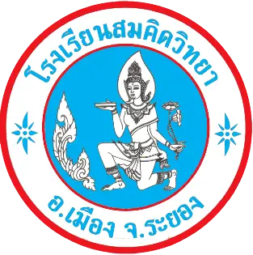
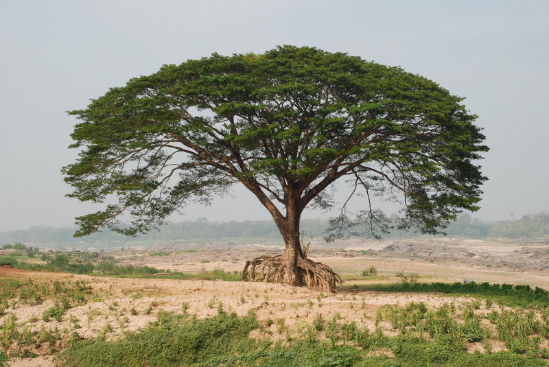

mail@somkidvittaya.ac.th
80/5 ถ.หลังวัดป่าประดู่ ต.ท่าประดู่ อ.เมือง จ.ระยอง
ข้อมูลเกี่ยวกับโรงเรียนสมคิดวิทยา

โรงเรียนสมคิดวิทยา ก่อตั้ง เมื่อวันที่ 1 พฤษภาคม พ.ศ. 2503 โดยมีนายทองอยู่ สุขศิริเป็นผู้ก่อตั้งและดำรงตำแหน่งผู้จัดการมี นางสมคิด สุภาพ
ดำรงตำแหน่งผู้รับใบอนุญาต ขณะนั้นโรงเรียนได้เปิดทำการสอนเริ่มเปิดสอนระดับอนุบาลเพียงอย่างเดียว ได้รับอนุญาตให้รับนักเรียนความจุจำนวน 150 คน
มีครูทำการสอนทั้งหญิง และชาย จำนวน 10 คน ทั้งนี้อยู่ภายใต้ความควบคุมบริหารของนายทองอยู่ สุขศิริ และมีนายแพน จันทร์ศรี ตำรงตำแหน่งครูใหญ่
เป็นผู้ดำเนินกิจการด้วยดีตลอดมา
จนกระทั่งในปี พ.ศ. 2508 นายสมหมาย สุขศิริ ดำรงตำแหน่งผู้จัดการ นายอุทัย ภุมรินทร์ดำรงตำแหน่งครูใหญ่ จึงได้อนุญาตขยายเปิดทำการสอน
ในระดับชั้นประถมศึกษาและมัธยมศึกษาตอนต้นโดยเริ่มเปิดปีละระดับชั้นเรียน ขออนุญาตขยายการรับนักเรียนเพิ่มอย่างต่อเนื่องตลอดมา
โรงเรียนสมคิดวิทยามีพื้นที่ค่อนข้างคับแคบสำหรับจัดการศึกษาระดับประถมศึกษา และมัธยม
ต่อมาในปี พ.ศ. 2530 คงจัดการศึกษาระดับอนุบาลเพียงอย่างเดียว เพื่อให้เหมาะสมกับพื้นที่อันจำกัด
ต่อมาในปี พ.ศ. 2533 นางศศิธร สุขศิริ ดำรงตำแหน่งครูใหญ่ นายสมหมาย สุขศิริ ดำรงตำแหน่งผู้ทำการแทนผู้รับใบอนุญาต และผู้จัดการ จึงได้มีการพัฒนาอาคารสถานที่จัดกิจกรรมเสริมหลักสูตรให้กับผู้เรียน เป็นลำดับอย่างต่อเนื่อง จนกระทั่งในปี พ.ศ. 2537 ผู้ปกครองมีความต้องการให้เปิดสอนในระดับประถมศึกษา ทาง ผู้บริหารจึงได้ขออนุญาต เปิดการเรียนการสอนระดับประถมศึกษาขึ้นพร้อมทั้งได้ ขยายพื้นที่ของโรงเรียนปรับปรุงอาคารสถานที่ พัฒนาการเรียน การสอน อย่างต่อเนื่องตลอดมาจนถึงปี พ.ศ.2565 ท่านผอ. ดร.ศศิธร เสียชีวิตด้วยอาการป่วย จึงมีการแต่งตั้ง นายณัฐวัฒน์ สงเคราะห์ธรรม ขึ้นดำรงตำแหน่งผู้อำนวยการโรงเรียนสมคิดวิทยา
เมื่อวันที่ 10 ตุลาคม พ.ศ. 2565 จนถึงปัจจุบัน
ในปี พ.ศ. 2567 ได้จัดตั้ง บริษัทศิริธรรม จำกัด โดยมีนายณัฐวัฒน์ สงเคราะห์ธรรม เป็นผู้ลงนามแทนผู้รับ
ใบอนุญาตและดำรงตำแหน่งผู้จัดการ/ผู้อำนวยการโรงเรียนสมคิดวิทยา จนถึงปัจจุบัน

นางฟ้าถือดอกบัวและถือหนังสือมีดาวกระจาย ประกอบด้วยความหมายของสัญลักษณ์ ดังนี้
1. นางฟ้า คือ เทพธิตาเปรียบเสมือนครูผู้ให้ความรู้ ด้วยความรัก และเมตตาต่อศิษย์
2. ดอกบัว หมายถึง สัญลักษณ์ของความบริสุทธิ์ ความดีงาม ความศรัทธา เปรียบเหมือนการสร้างเยาวชน ที่มีความดีงามสู่สังคมประเทศชาติตลอดมา
3. หนังสือ หมายถึง เครื่องหมายที่ในการใช้เขียนหรือตีพิมพ์เป็นเล่มแทนคำพูดเป็นลายลักษณ์อักษร เปรียบเหมือนแหล่งศูนย์รวมความรู้ต่าง ๆ
4. ดาวกระจาย 2 ดวง หมายถึง ความสดใสมีคุณค่าของเด็กในวัยปฐมวัยและประถมศึกษาที่อยู่คู่กับโรงเรียนสมคิดวิทยา
สีประจำโรงเรียน คือ สีฟ้า-แดง
สีฟ้า หมายถึง ความนุ่มนวล ความสุขุม ความสงบเย็นและความผ่อนคลาย
สีแดง หมายถึง พลังและอำนาจที่ส่งผลให้ประสบผลสำเร็จในชีวิต

ต้นจามจุรี เป็นต้นไม้ที่มีอายุกว่า 100 ปี ที่แตกกิ่งก้านสาขาให้ร่มเงากับโรงเรียนตลอดมา เปรียบเหมือนความรัก ความเมตตา
ความเอาใจใส่ของโรงเรียนที่มีต่อลูกสมคิดวิทยาที่เฝ้าปลูกฝังด้านความคิด และความงอกงามเป็นเยาวชนที่ดีของชาติสืบไป
คำขวัญปฐมวัย
ให้ความรู้ ให้ความรัก ให้ความปลอดภัย
คำขวัญประถมศึกษา
คุณธรรมนำการศึกษา เพื่อพัฒนาตนเองและสังคม
อัตลักษณ์
โรงเรียนสืบสานอนุรักษ์ศิลปวัฒนธรรมมรดกไทยและโขน
คำขวัญประถมศึกษา
สืบสานอนุรักษ์ศิลปวัฒนธรรมมรดกไทยและโขน
"การศึกษาดี กิจกรรมเด่น เน้นวินัย ยึดมันคุณธรรม"
การศึกษาดี หมายถึง นักเรียนมีการเรียนรู้อย่างมีคุณภาพ และเกิดผลสัมฤทธิ์ทางการเรียน ตามหลักสูตรแต่ละระดับ
กิจกรรมเด่น หมายถึง กิจกรรมของนักเรียนเป็นที่ยอมรับของชุมชน และสังคม
เน้นวินัย หมายถึง นักเรียนเป็นผู้อยู่ในระเบียบวินัยกฎเกณฑ์ ของสถานศึกษาและสังคม
ยึดมั่นคุณธรรม หมายถึง มีจิตสำนึกยึดมั่นและปฏิบัติตนเป็นผู้มีคุณธรรม จริยธรรมปรัชญาของโรงเรียนสมคิดวิทยามุ่งจัดการศึกษาบนพื้นฐานของการอบรมเลี้ยงดูเด็กให้เรียนรู้จากประสบการณ์ตรง มุ่งจัดการศึกษาดี กิจกรรมเด่น เน้นวินัย ยึดมั่นคุณธรรม ให้เด็กมีความสามารถในการวิเคราะห์ การแก้ปัญหาได้อย่างเหมาะสมตามวัย ปลูกฝังนิสัยรักการอ่าน ไฝ่เรียน ใฝ่รู้พัฒนาเด็ก ด้วยแนวคิดและนวัตกรรมในการพัฒนาเด็กปฐมวัยให้ร่างกายแข็งแรง เจริญเติบโตมีการพัฒนาตามวัยครบทั้ง 4 ด้าน มีสุขภาพจิตดี มีน้ำใจมีวินัย มีความเป็นไทยเป็นพื้นฐานการเรียนรู้อย่างต่อเนื่องในอนาคตให้มีความเชื่อมั่น กล้าคิด กล้าทำ กล้าแสดงออก มีคุณธรรม จริยธรรม อนุรักษ์ศิลปวัฒนธรรมและสิ่งแวดล้อม
โรงเรียนสมคิดวิทยา
80/5 ถนน หลังวัดป่า ตำบล ท่าประดู่
อำเภอเมืองระยอง ระยอง 21000
โทรศัพท์ 038 611 251
Email @somkidvittaya.ac.th